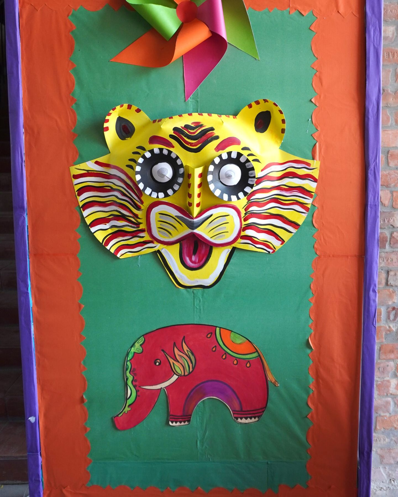

One curriculum, from Playgroup to Class XII.
Playpen follows the Cambridge curriculum from its Elementary stage up to the Senior stage. In the Senior stage the school prepares students for the examinations of Cambridge Assessment International Education (CAIE) at three levels: Ordinary Level (O Level), Advanced Subsidiary (AS) and Advanced Level (A Level).
The diagram below is a list of the sixteen classes in their four stages. The Cambridge examinations belong to the Senior stage.
-
Elementary
- Playgroup
- Nursery
- KG I
- KG II
-
Junior
- Class I
- Class II
- Class III
-
Middle
- Class IV
- Class V
- Class VI
- Class VII
-
Senior
- Class VIII
- Class IX
- Class X
- Class XI
- Class XII
Cambridge O Level, AS and A Level
The three levels, as the school describes them.
The table sets O Level beside AS and A Level, using only what the school has published about each.
| What is compared | O Level | AS and A Level |
|---|---|---|
| Minimum subjects | Six | Three at A Level; the school gives no figure for AS |
| Compulsory subjects | English Language, Bengali and Mathematics (Syllabus D) | None listed by the school |
| Subjects on offer | Twelve: the three compulsory subjects and nine electives | Nine |
| How a student gets there | Electives are chosen in Class VIII, after the second-semester examinations | Admission to Class XI, based on the school's mock examinations and the O Level result |
| At Playpen since | The first candidate sat the examination in 2003 | A Level classes began in 2013; the first batch enrolled in 2015 |
Source: the school's Senior School and history pages, as published in September 2026. The school confirms the subjects it offers each year. Senior School and AS and A Level list them.
Bengali is compulsory at O Level.
English is the language of instruction at Playpen. Bengali is one of the three compulsory O Level subjects, with English Language and Mathematics, and the school says it puts weight on preserving the Bengali language and on awareness of Bangladesh's cultural heritage.
The school's pages do not say whether Bangladesh Studies is taught as a separate subject. If that matters to your plans, call 01755 693 623, between 9.00 am and 1.00 pm.

It is essential that children understand their own history and culture, as well as appreciate the traditions of other people and places.
They must also have a firm grasp of language, as a means of communication, and be equipped with an education that can be utilized in everyday life.
What the school has not yet published.
Families who are new to Cambridge ask the same few questions. Where the school has written nothing, this page does not guess: it says so, and it gives the number to call.
Is it O Level or IGCSE?
The school's pages speak of O Level and list O Level subjects, including Mathematics (Syllabus D). They do not mention IGCSE. For the syllabus of one particular subject, call 01755 693 623, between 9.00 am and 1.00 pm.
How are results graded, and which examination series does the school enter?
The school has not published the examination series it enters, the registration steps or the deadlines. Please call 01755 693 623, between 9.00 am and 1.00 pm. Examinations and reporting has what the school does say about its own examinations.
Will O Level and A Level results be accepted by universities in Bangladesh?
The school has not published how O Level and A Level results are recognised in Bangladesh, or the equivalence process. This page says nothing about it until the school has confirmed the procedure. What the school does publish is that senior students receive recommendation letters, transcripts and testimonials, and that career counselling covers university applications at home and abroad. See Student support.
What does it cost beyond tuition?
The school has not published examination registration costs. It explains fees and monthly tuition to a family after the child has been selected. Fees and payment says how fees are explained and paid.
Words you will hear.
- CAIE
- Cambridge Assessment International Education, the body whose examinations Playpen's senior students prepare for.
- O Level
- Ordinary Level. At Playpen, students take at least six subjects, three of them compulsory.
- AS Level
- Advanced Subsidiary. At Playpen it follows O Level. The school has not said which class sits AS.
- A Level
- Advanced Level. Taught at Playpen since 2013.
- Syllabus D
- The name the school gives the O Level Mathematics syllabus it teaches.
- Elective
- A subject a student chooses, as against the three compulsory ones. Playpen students choose in Class VIII.
- Mock examination
- The school's own trial examination. Its results, with the O Level result, decide admission to Class XI.
- Semester
- One of the two parts of the school year. A written examination ends each.